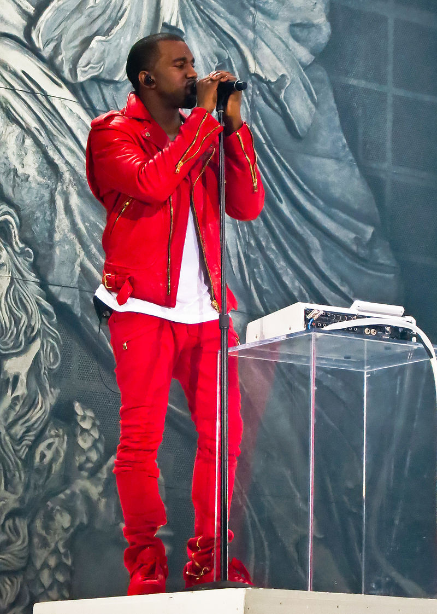
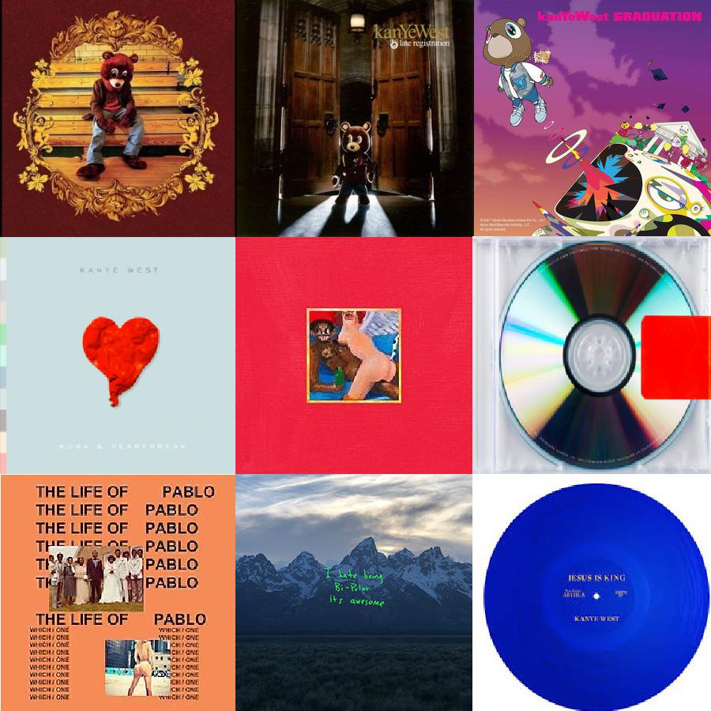
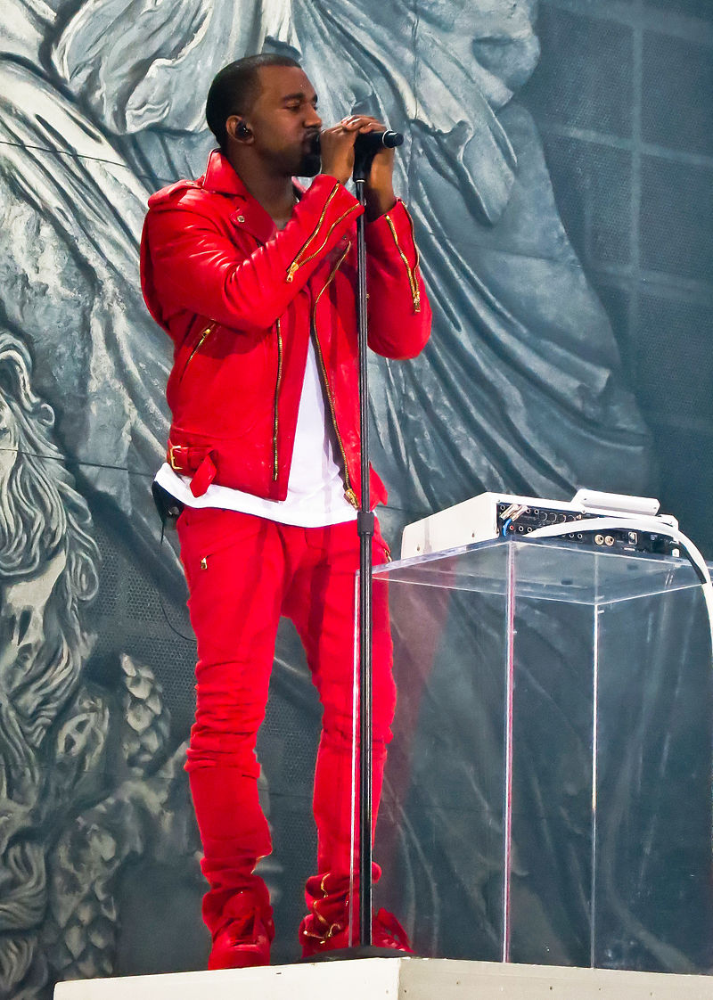
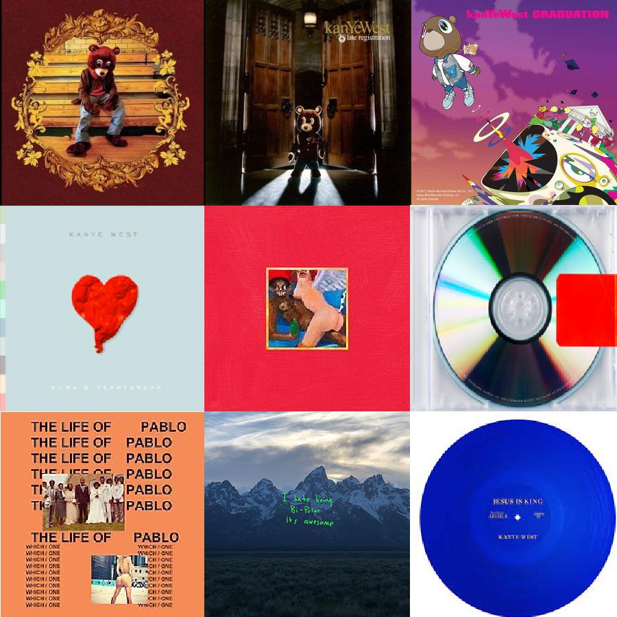

Ye (/jeɪ/ YAY; born Kanye Omari West; June 8, 1977), commonly known by his birth name Kanye West (/ˈkɑːnjeɪ/ KAHN-yay), is an American rapper, record producer, entrepreneur, and fashion designer. He is widely regarded as one of the greatest and most influential hip hop musicians of all time, as well as one of the greatest musicians of his generation. Born in Atlanta and raised in Chicago, West gained recognition as a producer for Roc-A-Fella Records in the early 2000s, producing singles for several artists and developing the "chipmunk soul" sampling style. Intent on pursuing a solo career as a rapper, he released his debut studio album, The College Dropout (2004), to critical and commercial success and subsequently founded the record label GOOD Music.
West explored diverse musical elements such as orchestral arrangements, synthesizers, and autotune on the albums Late Registration (2005), Graduation (2007), and 808s & Heartbreak (2008). Drawing inspiration from maximalism and minimalism respectively, his fifth album My Beautiful Dark Twisted Fantasy (2010) and sixth album Yeezus (2013) were also released to critical and commercial success. West further diversified his musical styles on The Life of Pablo (2016) and Ye (2018), and explored Christian and gospel music on Jesus Is King (2019). After a series of delays, his highly anticipated tenth album Donda (2021) was released to continued commercial success, but to mixed critical reception. He released its sequel, Donda 2 (2022), a few months later, exclusively through his tie-in audio speaker service. West's discography also includes the full-length collaborative albums Watch the Throne (2011) with Jay-Z and Kids See Ghosts (2018) with Kid Cudi.
West's outspoken views and life outside of music have received significant media coverage. He has been a frequent source of controversy for his conduct on social media, award shows, and public settings; as well as his comments on the music and fashion industries, U.S. politics, race, and slavery. His Christian faith, estranged marriage to Kim Kardashian, and mental health have also been sources of further media attention. As a fashion designer, he has collaborated with Nike, Louis Vuitton, The Gap, and A.P.C. on clothing and footwear, and leads the Yeezy collaboration with Adidas. He is also the founder and head of the creative content company Donda. In 2020, West launched an unsuccessful independent presidential campaign that primarily advocated for a consistent life ethic.
One of the world's best-selling music artists, with over 160 million records sold, West has won 24 Grammy Awards, the joint tenth-most of all time, and the joint-most Grammy awards of any rapper along with Jay-Z. He is frequently lauded as one of hip hop's greatest artists, with his music among the most acclaimed. Among his other awards are the Billboard Artist Achievement Award, a joint-record three Brit Awards for Best International Male Solo Artist and the Michael Jackson Video Vanguard Award. Six of West's albums were included on Rolling Stone's 2020 500 Greatest Albums of All Time list with the same publication naming him one of the 100 Greatest Songwriters of All Time. He holds the joint record (with Bob Dylan) for most albums (4) topping the annual Pazz & Jop critic poll, and has the 5th most appearances on the Billboard Hot 100 (133 entries). Time magazine named him one of the 100 most influential people in the world in 2005 and 2015. Forbes estimates his net worth at $2 billion as of 2022.
 


